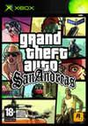
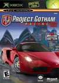
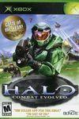

| VIDEOJUEGO | DESCRIPCIÓN |
|  Grand Theft Auto: San Andreas | El GTA definitivo de esta generación para Xbox lleva la acción a la zona de California y Las Vegas de los años 90, en una aventura en la que Carl Johnson, natural de Los Santos (Los Ángeles), tendrá que limpiar su nombre en su ciudad, en San Fierro (San Francisco), Las Venturas (Las Vegas) y en todo el interior del estado de San Andreas. Podremos personalizar a nuestro personaje al máximo, haciéndolo un matón fuerte, o ágil, o gordo, además de ganar experiencia usando armas, establecer relaciones con todo tipo de personajes o comprar negocios. |
| Project Gotham Racing 2 | Project Gotham Racing 2 (PGR2) es un videojuego de carreras desarrollado por Bizarre Creations y publicado por Microsoft Game Studios, lanzado exclusivamente para la Xbox en 2003. Como secuela de Project Gotham Racing, este título continúa la serie ofreciendo carreras de autos en entornos urbanos detallados, combinando precisión en la conducción con un estilo de juego accesible y emocionante. PGR2 es ampliamente reconocido por su mezcla de realismo y jugabilidad arcade, así como por su enfoque en ganar "puntos Kudos" mediante la realización de derrapes, adelantamientos y otras maniobras hábiles durante las carreras. |
| Halo | El juego que inició el mito del Jefe Maestro. Este título de lanzamientos de Xbox revolucionó el mercado de la acción en primera persona para consola, llevándonos al futuro, en una guerra entre la humanidad y la civilización alienígena conocida como el Covenant (Pacto), peleando por el control de un misterioso anillo en medio del espacio. |